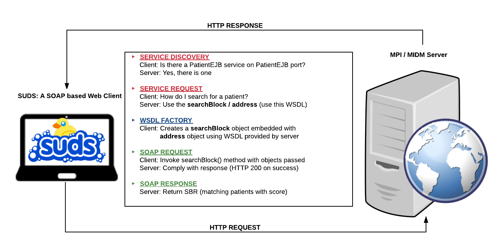

MPI Business Profiler¶
The basic components are a SUDS web-services client, an MPI/MIDM server and a secure HTTP communication betwen the two. Client is implemented using SUDS - a lightweight soap-based python program licensed under LGPL. It provides an object-like API that can read WSDL documents at runtime. The client can make a SOAP request to server
Request / Response¶
A secure connection is established to the server. In service discovery phase, the client requests for patient search documents (service request). The server complies with the searchBlock and address WSDL documents. Client uses the factory to create a searchBlock instance using the methods provided by the service endpoint. This is partially filled with the user-input (the enrollee information) and passed back to the server with a SOAP request. The server complies with a Single Best Record (SBR) of matching patients using it’s Master Index Data Manager (MIDM). The SBR contains the matching score among other demographic data.
The Client receives the response (SBR) and processes it further. If the match rate is higher than a given threshold, the client makes a second service request, this time for the getLIDs WSDL document. The matching local IDs (LIDs) for the SBR are scanned and a site-specific filter is applied on them.
Once the filter is applied, the records that survive are then serialized and written into a flat file (csv) for requestor.